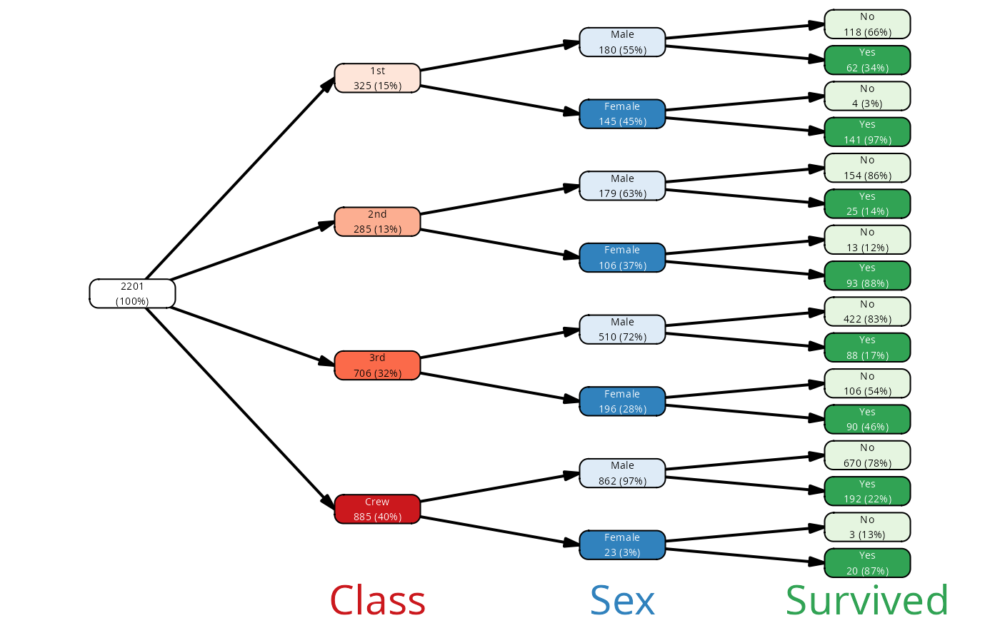
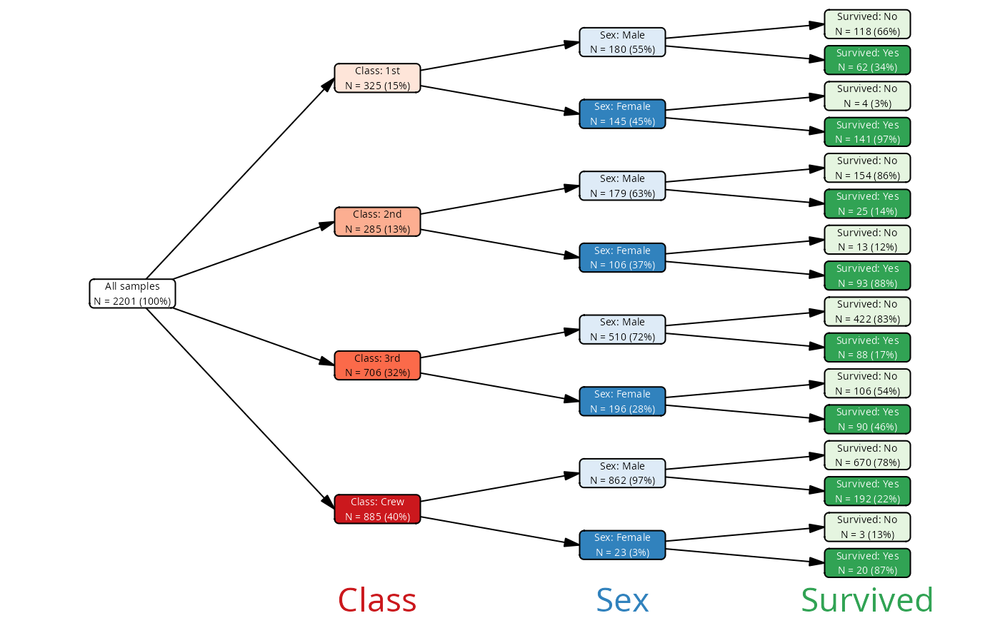
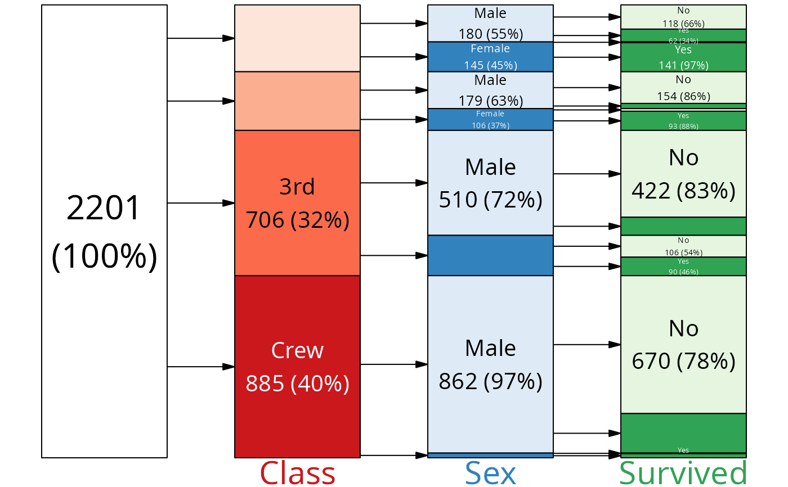
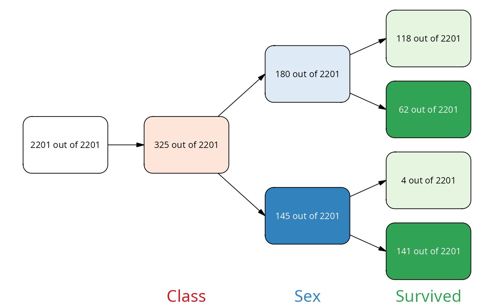

Add labels to a plot
add_labels.RdAdds or modifies a column called label to the node data frame of a vtree object.
Labels are used by the plot.vtree() function to show as node labels.
Usage
add_labels(
vtree,
template = "simple",
mask = NULL,
fmt = NULL,
fmt_na = NULL,
root_label = NA
)Arguments
- vtree
an object of class vtree
- template
One of the predefined formats; can be 'simple' or 'long'. If 'custom', you must provide the
fmtandfmt_NAparameters.- mask
If not NULL, then a logical vector is expected indicating the nodes for which the labels will be modified.
- fmt
an R expression to format the valid value nodes. If not NULL, replaces the format from the template.
- fmt_na
an R expression to format NA nodes in trees with valid percentages. If not NULL, replaces the format from the template. This is mostly to omit frequency data from NA nodes if the missing data was not used as a denominator to calculate percentages. If NULL and fmt is not NULL, fmt will be used for NA nodes as well.
- root_label
Label to be used for the root node. If NA, do not modify the root label.
Details
By default, add_labels() produces simple node labels containing the
associated variable value, number of cases and percentage within the
parent node.
Formatting can be done with the fmt/fmt_na parameter, which is
an R expression. You can use sprintf, glue, paste or whichever
expressions you like to construct a label from the following variables:
freq, the frequency for a noden, number of samples of a nodenode_col, name of the variable associated with a nodenode_val, value of the variable associated with a nodenode_cv, same aspaste0(node_col, ':', node_val)col_alias, the alias for the column/variable associated with a node (default same as node_col, but can be modified by providing avar_aliascolumn in the vtree)val_alias, the alias for the value of the variable associated with a node (default same as node_val, but can be modified by providing aval_aliascolumn in the vtree)plus whatever new columns you have added to the vtree with mutate().
(the difference between node_col and node_name is that you can set node_name to whatever you like, while node_col must remain unchanged)
Examples
vt <- vtree_from_freqtable(Titanic, Class, Sex, Survived)
# look at the labels
add_labels(vt) |> pull(label)
#> [1] "2201" "1st\n325 (15%)" "2nd\n285 (13%)"
#> [4] "3rd\n706 (32%)" "Crew\n885 (40%)" "Male\n180 (55%)"
#> [7] "Female\n145 (45%)" "Male\n179 (63%)" "Female\n106 (37%)"
#> [10] "Male\n510 (72%)" "Female\n196 (28%)" "Male\n862 (97%)"
#> [13] "Female\n23 (3%)" "No\n118 (66%)" "Yes\n62 (34%)"
#> [16] "No\n4 (3%)" "Yes\n141 (97%)" "No\n154 (86%)"
#> [19] "Yes\n25 (14%)" "No\n13 (12%)" "Yes\n93 (88%)"
#> [22] "No\n422 (83%)" "Yes\n88 (17%)" "No\n106 (54%)"
#> [25] "Yes\n90 (46%)" "No\n670 (78%)" "Yes\n192 (22%)"
#> [28] "No\n3 (13%)" "Yes\n20 (87%)"
add_labels(vt) |> plot()

vt |> add_labels(template = "long") |> plot()

# only add labels to some nodes
mask <- find_nodes(vt, freq > .30)
vt |> add_labels(mask = mask) |>
plot(layout = "proportional")

# customize the format
vt |>
add_labels(fmt = sprintf("%d out of %d",
n, round(n/freq)),
fmt_na = "NA") |> plot()
